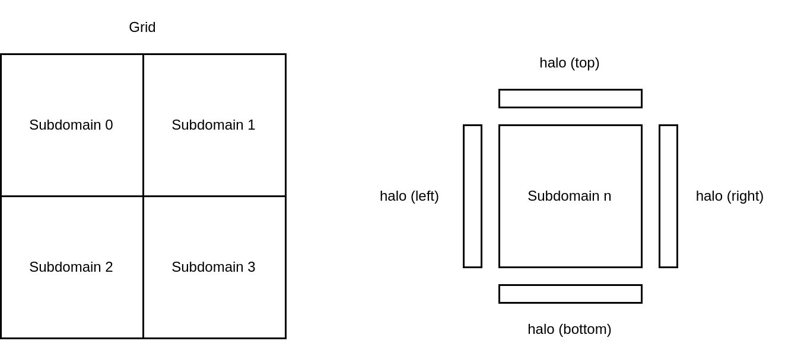
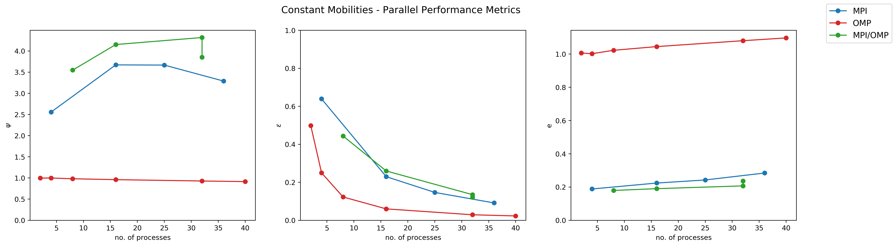

- Generated by
 1.9.3
1.9.3
|
SpinDec2
Software Modelling Spinodal Decomposition
|
OpenMP multi-threading is be used for each domain created by MPI to accelerate the grid loops, calculating the bulk chemical potential and total chemical potential. The workload of the loops within each solver is shared by a team of parallel threads forked from the master thread. Each thread is allocated a distinct set of iterations which it executes independently. However, only the master thread makes the MPI calls within each MPI domain.
A Cartesian topology is used to split the concentration, total chemical potential, and mobilities grids into subdomains depending on the number of MPI processes requested by the user. To implement periodic boundary conditions (PBCs) "halo" arrays were set up such that boundary values can be efficiently communicated between the different MPI processes. The implementation of the Cartesian topology is illustrated in the figure below for a grid split over 4 MPI processes, where each process executes the relevant calculations on a subdomain. Once the necessary calculations for a subdomain are complete to advance the local concentration grids in time, the global grid can be collected on a single process, and the halos are updated to carry out the next timestep in parallel.

The performance of the parallelised code was evaluated using three metrics, namely: the speed up, \(\psi\) (left); parallel efficiency, \(\epsilon\); and Karp-Flatt metric, \(e\). The figure below shows the three performance measures for a 1200x1200 grid test case and the "constant mobilities" problem run for \(1e^{-4}\) timesteps and an output write frequency of 500 frames (inputs provided below).
The results show that the best performance is obtained when the code is run using a combination of MPI and OpenMP, which gives the largest speed up of the parallelisation strategies tested. For MPI/OpenMP, the number of processes is given as:
no. of processes = no. of MPI processes \(\times\) no. of OpenMP threads .
For the test case presented the optimal performance is obtained for 4 MPI processes with 4 OpenMP threads for each i.e. 16 processes. Using OpenMP without MPI results in a decrease in performance as the number of OpenMP threads is increased and is therefore not recommended.
For all parallelisation strategies, a decrease in the parallel efficiency with increasing the number of processes is observed, as parallel overheads (e.g. inter-processors communication) become more prominent. This is also reflected in the Karp-Flatt metric, which increases with increasing the number of processes, indicating that the parallel code is limited by such overheads rather than unparallelised work. The Karp-Flatt metric for the OpenMP case exceeds 1.0 (the theoretical upper bound for this metric) due to the resulting increase in the execution time with increasing the number of OpenMP threads.
To obtain the optimal performance of the code on a given system architecture, such tests are recommended.
$$ \psi = \frac{\text{serial code execution time}}{\text{parallel code execution time}} ,$$ $$ \epsilon = \frac{\text{serial code execution time}}{p \times \text{parallel code execution time}} ,$$ $$ e = \frac{\frac{1}{\epsilon} - \frac{1}{p}}{1 - \frac{1}{p}} .$$concentration_max = 0.9 concentration_min = 0.1 domain_x_size = 1200 domain_y_size = 1200 mobility_a = 4 mobility_b = 4 free_energy_gradient_parameter = 0.0001 bulk_free_energy = 1 checkpoint_interval = 1000 write_frequency = 500 max_time = 1e-6 time_step = 1e-10 random_seed = 12345356 use_input = 0 excitation_a = 0.1 excitation_b = 0.2 temperature_min = 900 temperature_max = 1000 problem = constant stabilization_term = 0

The spectral solver is only parallelised with OpenMP, as the fftw library which is used to perform the fast and inverse fast fourier transforms, already handles the parallelisation with MPI.
Authors: Anas Siddiqui, Ben Gosling, Dyaln Morgan, Geraldine Anis, Matyas Parrag